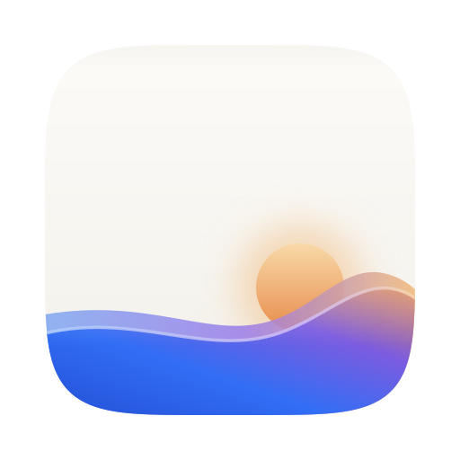
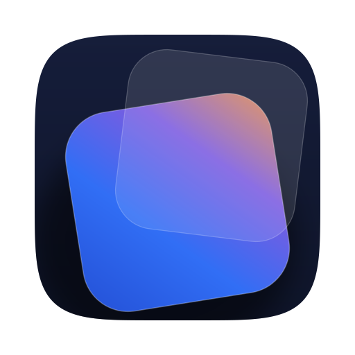
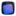
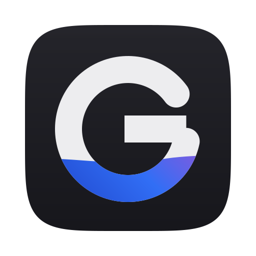

回应上一版三个问题:三个点叙事失败 → 移除;浪太腼腆 → 色彩占比提到 ~40%;托盘双矩形撞「屏幕镜像」→ 三案托盘全部重画。黎明渐变(蓝主)沿用已定方向。

白画布保留,浪放大、浪峰立起来,半轮日出从浪后升起 —— 「动态壁纸的黎明」一句话讲完,16px 下仍有白+蓝+橙三段记忆点。


16墨蓝夜场上,两张透明色纸错位叠放(黎明渐变 × 玻璃白)= 内容的「层」。Dock 里最像宝石,暗色壁纸生态里最融入;留白最少,最「作品感」。

墨场之上,字标 G 的笔画下段化作黎明浪 —— 名字就是标志,剪影最强、小尺寸最稳;代价:隐喻最少,像一个「正常 app」。